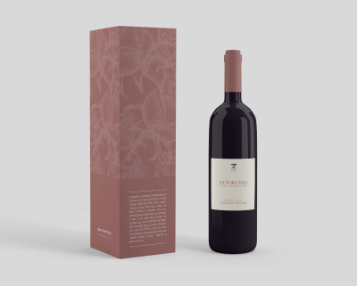
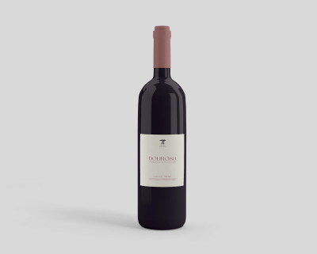
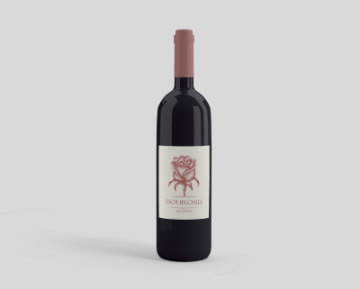

DOUROSA WINE PACKAGING
Challenge
The brand owners intend to renew the identity of Dourosa wine with a contemporary, simple, but compelling design.
Create a frontside label and packaging to contain the bottle. It is proposed that students design the new identity, using techniques to capture the unique characteristics of the wine. Characteristics such as quality, elegance, and tradition should be expressed in the design. The wine's identity should be instantly recognizable but not carried out using minimalist techniques.
Approach
The main technique was used to illustrate the Rose, coming from the name 'Dou Rosa'. With some new redesigns shared on digital platforms, along with the rest of the information given in the brief, we obtained a very good result.